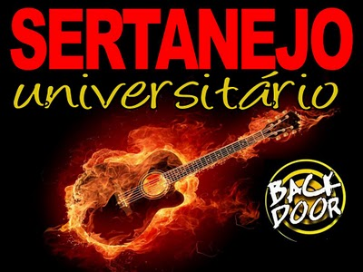

O Sertanejo Universitário é um estilo musical brasileiro, vertente da música sertaneja. Suas origens encontram-se na capital do estado de Mato Grosso do Sul, Campo Grande, com a dupla Os Filhos de Campo Grande, que passaram a cantar suas canções num compasso mais rápido e com uma maior valorização dos sons acústicos.
Prévias